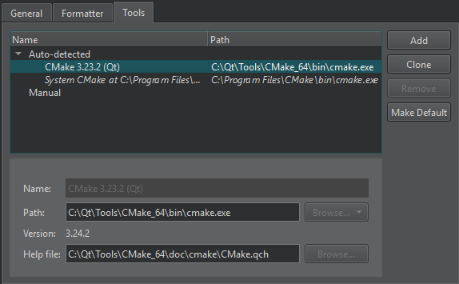
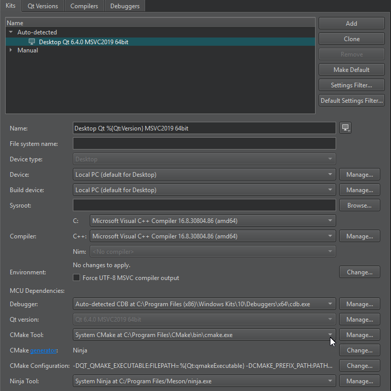

Add CMake tools
Qt Creator automatically detects the CMake executable that you specify in the PATH. You can add paths to other CMake executables and use them in different build and run kits.
To see the CMake installations that Qt Creator automatically detects:
- Select Preferences > CMake > Tools.

- The Name field displays a name for the CMake installation.
- The Path field displays the path to the CMake executable.
- The Help file field displays the path to the CMake help file (.qch) that comes with CMake.
Add or remove CMake tools
To add a path to a CMake executable that Qt Creator does not detect automatically, and to specify settings for it, select Add. To make changes to automatically detected installations, select Clone.
To remove the selected CMake executable from the list, select Remove.
Set the default CMake tool
Qt Creator uses the default CMake if it does not have enough information to choose the CMake to use. To set the selected CMake executable as the default, select Make Default.
Add CMake tools to kits
To add the CMake tool to a build and run kit, select Preferences > Kits. The kit also specifies the CMake generator that is used for producing project files for Qt Creator and the initial configuration parameters:

See also How To: Build with CMake, CMake, Add kits, and Kits.